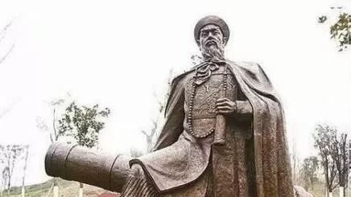
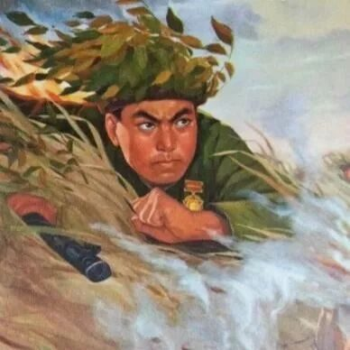
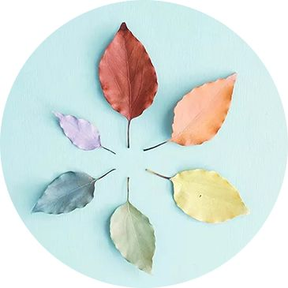
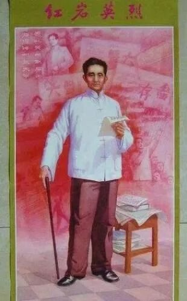
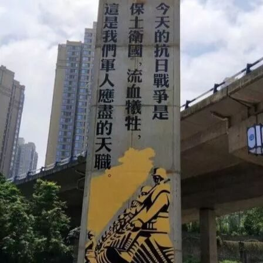

【行者无疆·源洄渝州】文化科普汇总-英雄文化（二）
行者无疆 文化科普汇总
英雄文化（二）
一片丹心图报国，千秋青史胜封侯。
为反抗内外入侵，
重庆已涌现出了太多的英烈；
从黄开基到聂荣臻，从江竹筠到邱少云；
当他们的满腔热血洒在
这片誓死守卫的热土时，
那一刻，生命灿若血红的山茶


黄开基（1790～1856），字自堂，清重庆府永川县五间乡人，清抗英将领。在第一次鸦片战争中率军在台抗击英军，取得击沉英舰“阿纳号”的战绩。
黄开基为官16年，对人宽厚公道，处理案件及时，他走到那里，就增加赡老抚幼经费，设育婴局，兴办学校，对贫困学生给以补助，深受群众爱戴。黄开基在代理福建平和知县时，领导人民筑堤防洪，群众为了纪念他的功绩，把这道防洪堤取名“黄公堤”。


邱少云在1949年12月参加中国人民解放军。1951年3月参加中国人民志愿军赴朝作战，1952年10月12日因美军燃烧弹发落在邱少云潜伏点附近，火势蔓延全身，为避免暴露，放弃自救壮烈牺牲，年仅26岁。


重庆抗战遗址博物馆地处长江南岸的南山风景区内。博物馆作为重庆陪都文化的重要组成部分，收藏、保护、研究、展示了重庆抗战大后方历史文物资料。
重庆抗战遗址作为当时国民政府军事、政治、外交中枢的重要场所，也是中国人民抗日战争和世界反法西斯战争一些重大历史事件的重要见证，是重庆在抗日战争时期重要历史地位、重要历史贡献的价值体现和历史文化的重要载体。


李大荣（1902—1948），生于今重庆市梁平县虎城乡腊树沟，1927年加入中国共产党，1948年2月27日被国民党逮捕关押于渣滓洞监狱，同年7月22日牺牲于重庆大坪，时年46岁。
1948年2月，地下党通知他完成一送信任务，在途经大观乡时因口音不同被盘查哨挡住，驻军旅长胡夷为邀功将他转至重庆渣滓洞。李大荣在那里受尽酷刑，却仍未吐露一字，最终被残忍杀害。

刘伯承
刘伯承（1892年12月4日—1986年10月7日），重庆市开州人。中华人民共和国元帅，中国人民解放军缔造者之一。
1911年，当辛亥革命的风暴席卷神州大地之际，毅然选择了从军之路。1926年加入中国共产党，相继参加南昌起义、长征、抗日战争、解放战争等。蒋介石赞扬他：“论战术之奇，刘伯承数中国军界一绝”“智计过人，不愧是军事家”。

卢作孚（1893.4.14—1952.2.8），重庆合川人，近代著名爱国实业家，民生公司创始人、中国航运业的先驱，被誉为“中国船王”、“北碚之父”。
卢作孚青年时提出教育救国并为之奋斗；自学成材后以北碚为基地，从事乡村建设的理论探索和社会实践；抗日期间坐镇宜昌，组织领导宜昌大撤退，保存了中国民族工业的命脉，被历史学家评为“中国的敦刻尔克大撤退”。
江竹筠
江竹筠（1920年8月20日——1949年11月14日），四川省自贡市大山铺镇江家湾人，中国共产党地下时期重庆地区组织的重要人物，为共产党的女烈士。
1948年6月14日，江竹筠在万县被捕后关押于重庆渣滓洞集中营。面对敌人严刑拷打，江竹筠迸发出共产党人钢铁般的宏伟意志；1949年11月14日，江竹筠被特务秘密枪杀，然后被用镪水毁尸灭迹，时年29岁。

重庆建川博物馆
重庆建川博物馆位于九龙坡区谢家湾付家沟片区，该片区前身是清末洋务运动时张之洞创办的汉阳兵工厂西迁重庆旧址，抗战时期是国民政府兵工署第一兵工厂所在地。博物馆通过实景还原，展示了重庆制造兵器的场景。
重庆建川博物馆提醒人们：虽然现在战火早已熄灭、硝烟已然散尽，但是历史不能遗忘，国耻应当铭记，今天的太平盛世来之不易，那段“红色年代”的历史值得每个华人赞美。
聂荣臻（1899年12月29日-1992年5月14日），字福骈，出生于重庆江津吴滩镇。建国后，历任中央军委秘书长兼中国人民解放军代总参谋长，国防委员会副主席等重要职务。
1938年3月，毛泽东曾风趣的评价聂荣臻：“中国有一部很著名的古典小说，叫做《水浒传》，里面写了鲁智深大闹五台山的故事，五台山就在晋察冀。五台山，前有鲁智深，今有聂荣臻。聂荣臻就是新的鲁智深。”
当五星红旗在解放碑上高高升起之时，
从渣滓洞到白公馆，从防空洞到钓鱼城，
重庆，这座沧桑的城市
沉浸在山茶花香中
来源丨行者无疆实践团
文字丨段智然
排版丨陈嘉颖
审核丨邓子孚 段智然
行者无疆实践团
QQ：2758025831

随行者一起认识世界
长按二维码关注